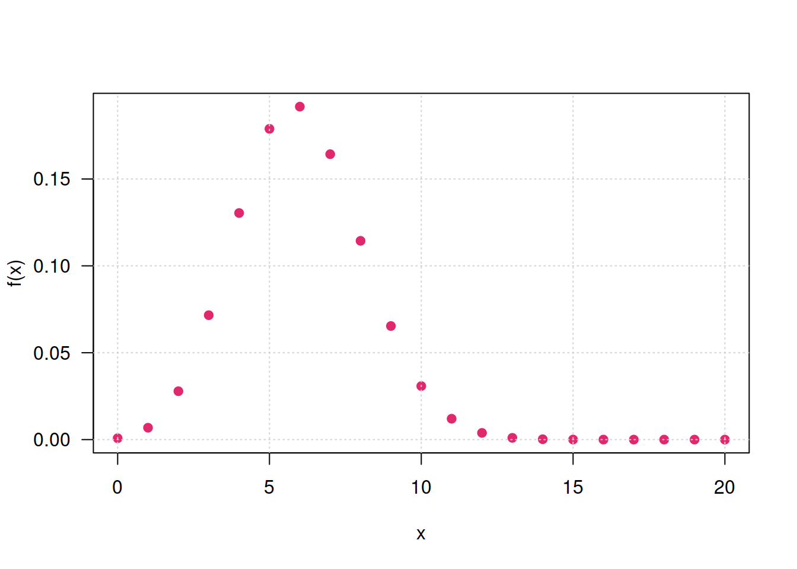
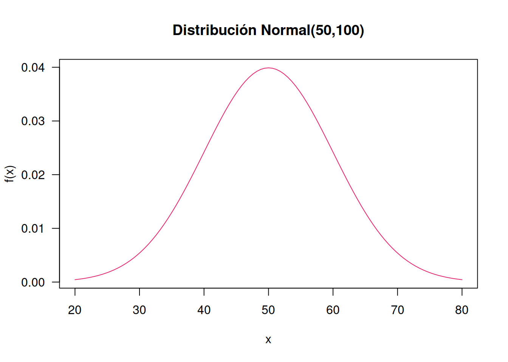
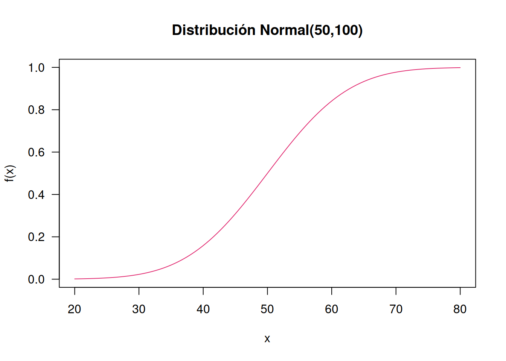
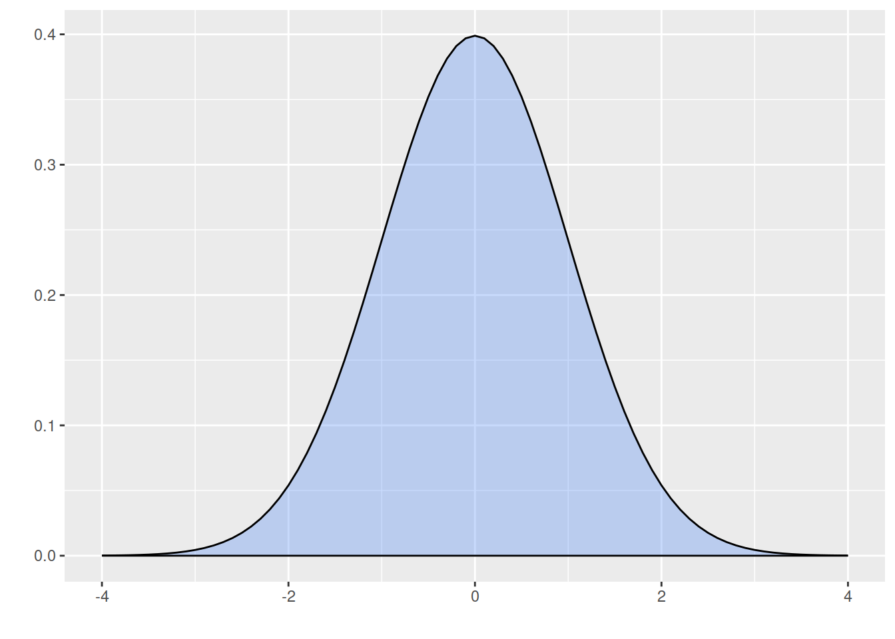
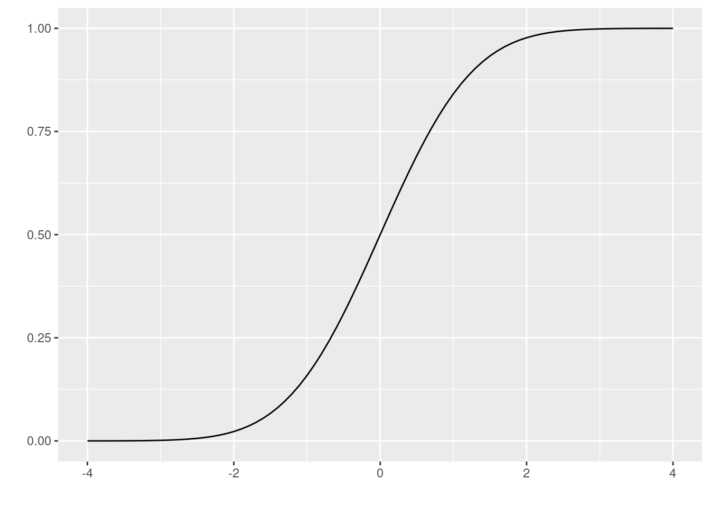
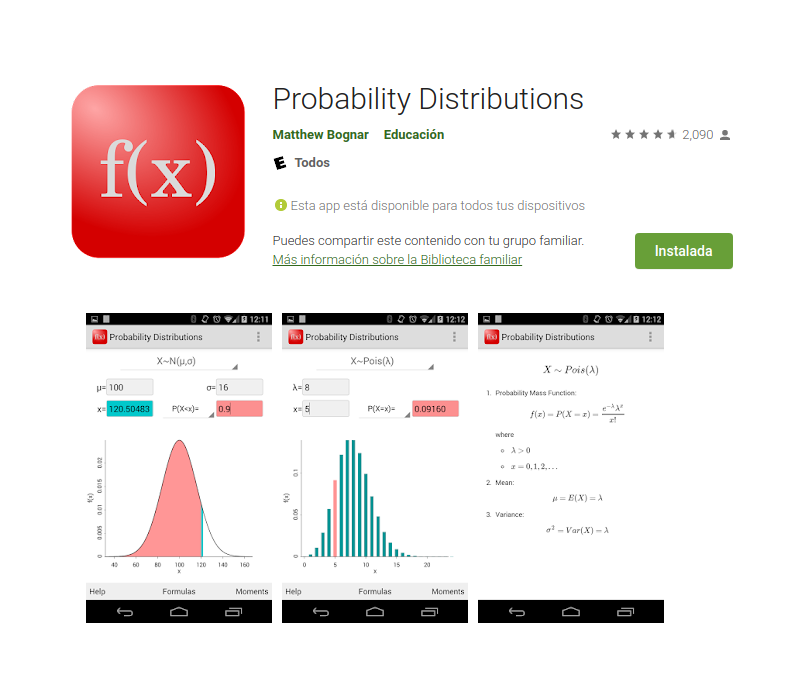

Unidad 2.4
dgonzalez
Funciones modelos
Código R
Existe un grupo de modelos identificados para las variables aleatorias tanto discretas como continuas que son utilizadas con frecuencia en diferentes contextos. A continuación se relacionan los principales modelos:
Modelos discretos:
- Bernoulli,
- binomial,
- Poisson,
- geometrico,
- hipergeometrico,
- binomial negativo.
Modelos continuos:
- uniforme
- normal
- exponencial
- lognormal
- gamma
- beta
- Weibull
- Cauchy
- Gumbel
- t-Student
- Ji-cuadrado
- F de Fisher
- Empirica o Kernel
En \(R\) los nombre de las funciones diseñadas para los cálculos requeridos están conformadas por dos partes:
La primera parte es una letra que identifica el propósito de la
función.
d : función de distribución de probabilidad \(f(x)= P(X=x)\), para el caso discreto. En el caso de las variables continuas representa la función de densidad de probabilidad \(f(x)\)
p : función de probbilidad acumulada \(F(x) = P(X \leq x)\)
q : percentil \(X_p\)
r : generador de números aleatorios
La siguiene tabla presenta estas las funciones para los principales modelos tanto discretos como continuos
| modelo | \(F(x)\) | \(X_{p}\) | \(f(x)\) | aleatorio |
|---|---|---|---|---|
| binomial | pbinom | qbinom | dbinom | rbinom |
| gometrico | pgeom | qgeom | dgeom | rgeom |
| hipergeometrico | phyper | qhyper | dhyper | rhyper |
| Poisson | ppois | qpois | dpois | rpois |
| binomial negativo | pnbinom | qnbinom | dnbionom | rnbinom |
| beta | pbeta | qbeta | dbeta | rbeta |
| Cauchy | pcauchy | qcauchy | dcauchy | rcauchy |
| exponencial | pexp | qexp | dexp | rexp |
| gamma | pgamma | qgamma | dgamma | rgamma |
| lognormal | plnorm | qlnorm | dlnorm | rlnorm |
| uniforme | punif | qunif | dunif | runif |
| Weibull | pweibull | qweibull | dweibull | rweibull |
| t-Student | pt | qt | dt | rt |
| Ji-cuadrado | pchisq | qchisq | dchisq | rchisq |
| F | pf | qf | df | rf |
En R los nombres de las funciones diseñadas para los cálculos requeridos están conformadas por dos partes: la primera parte con el propósito de la función (primera letra) y la segunda parte hace referencia al modelo a utilizar (d binom para el calculo de probabilidad de una variable aleatoria con distribución binomial)
En cada caso si no recuerda las sintaxis de la función puede hacer uso de las ayudas de R así:
help("pbinom")| p | función de distribución acumulada \(F(x)\) |
| q | percentil |
| d | densidad de probabilidad \(P(X=x)\) |
| r | variable aleatoria |
Sea una variables con distribución binomial con parámetros \(n=20\) y \(p=0.30\) , lo cual se puede simbolizar como : \(X\sim b(x; 20,0.30)\)
En este caso se requieren realizar los siguientes procesos:
- Calcular la probabilidad de \(P(X=7)\)
- Calcular la probabilidad acumulada \(P(X \leq 7)\)
- Construir la tabla de los valores de \(f(x)\) y \(F(x)\) para todo el rango de la variable
- Generar 15 números aleatorios a partir de esta distribución
- Construir la gráfica de la función de distribución de probabilidad \(f(x)\) para \(X\)
- Construir la gráfica de la función de distribución acumulada \(F(x)\)
Solución
- Calcular la probabilidad de \[ P(X=7) = \dbinom{20}{7} 0.30^{7} (10.30)^{(20-7)}\]
dbinom(7, 20, 0.30)[1] 0.164262- Calcular la probabilidad acumulada \[P(X \leq 7) = \displaystyle\sum_{x=0}^{x=7} \dbinom{20}{x} 0.30^{x} (1-0.30)^{(20-x)}\]
pbinom(7, 20, 0.30)[1] 0.7722718- Construir la tabla de los valores de \(f(x)\) y \(F(x)\) para todo el rango de la variable
x=0:20 # genera secuencia 0 al 20
fx=dbinom(x, 20, 0.30) # evalua f(x)
fx=round(fx,4) # redondea a 4 decimales
Fx=pbinom(x, 20, 0.30) # evalua en F(x)
Fx=round(Fx,4) # redondea a 4 decimales
data.frame(x,fx,Fx) # construye tabla x fx Fx
1 0 0.0008 0.0008
2 1 0.0068 0.0076
3 2 0.0278 0.0355
4 3 0.0716 0.1071
5 4 0.1304 0.2375
6 5 0.1789 0.4164
7 6 0.1916 0.6080
8 7 0.1643 0.7723
9 8 0.1144 0.8867
10 9 0.0654 0.9520
11 10 0.0308 0.9829
12 11 0.0120 0.9949
13 12 0.0039 0.9987
14 13 0.0010 0.9997
15 14 0.0002 1.0000
16 15 0.0000 1.0000
17 16 0.0000 1.0000
18 17 0.0000 1.0000
19 18 0.0000 1.0000
20 19 0.0000 1.0000
21 20 0.0000 1.0000- Generar 15 números aleatorios a partir de esta distribución
rbinom(15,20,0.30) [1] 3 5 7 6 6 7 6 6 7 7 3 5 4 5 6- Construir la gráfica de la función de distribución de probabilidad \(f(x)\) para \(X\)
plot(x,dbinom(x,20,0.30), pch=19,las=1,
ylab="f(x)", col=c3)
grid()
- Construir la gráfica de la función de distribución acumulada \(F(x)\)
x=0:20
plot(x,pbinom(x,20,0.30), pch=19, "s",las=1,
ylab="f(x)", col=c3)
\(f(x)\)
library(ggplot2)
x=0:20
fx=dbinom(x,20,0.30)
dat=data.frame(x,fx)
ggplot(dat) + geom_point(aes(x, fx),colour = c3, size = 2) +
scale_x_continuous(limits = c(0, 20),
breaks = 0:20,
labels = c('0','1','2','3','4','5','6','7','8','9','10','11','12','13','14', '15','16','17','18','19','20'))
Ahora supongamos que se tiene una variable continua con distribución normal, con media 50 y varianza 100, es decir desviación estándar 10, lo cual se puede representar como \(X\sim N(50,100)\).
En este caso vamos a hallar los siguientes valores:
- Calcular la probabilidad de que un valor de \(X\) sea menor o igual a 70,
- Calcular la probabilidad de que la variable sea mayor a 70: \(P(X>70)\)
- Genere 10 números aleatorios de la variables \(X\)
- Generar la gráfica de la función de densidad de la variable \(X\), \(f(x)\)
- Generar la gráfica de la función de probabilidad acumulada de la variable \(X\), \(F(x)\)
Solución
- Calcular la probabilidad de que un valor de \(X\) sea menor o igual a 70,
\[ P(X<70) =\displaystyle\int_{-\infty}^{70} \dfrac{1}{\sqrt{200 \pi }} \exp{\frac{1}{200 }(x-50)^{2}} \:dx \]
pnorm(70,50,sqrt(100))[1] 0.9772499- Calcular la probabilidad de que la variable sea mayor a 70: \(P(X>70)\)
pnorm(70,50,sqrt(100),lower.tail=FALSE)[1] 0.02275013- Genere 10 números aleatorios de la variables \(X\)
rnorm(10,70,sqrt(100)) [1] 65.04015 65.38150 81.50927 57.80083 77.77920 65.42652 52.79047 63.08919
[9] 58.48887 73.36456- Generar la gráfica de la función de densidad de la variable \(X\), \(f(x)\)
curve(dnorm(x,50,sqrt(100)), from=20, to=80,
col=c3, main="Distribución Normal(50,100)",
ylab="f(x)", las=1)
- Generar la gráfica de la función de probabilidad acumulada de la variable \(X\), \(F(x)\)
curve(pnorm(x,50,sqrt(100)), from=20, to=80,
col=c3, main="Distribución Normal(50,100)",las=1,
ylab="f(x)")
Código
# install.package("ggfortify")
library(ggfortify)
ggdistribution(dnorm, seq(-4, 4, 0.1), mean = 0, sd = 1,fill = c4)
# install.package("ggfortify")
library(ggfortify)
ggdistribution(pnorm, seq(-4, 4, 0.1), mean = 0, sd = 1)
App Probability Distributions
Esta aplicación permite calcular probabilidades desde el celular
